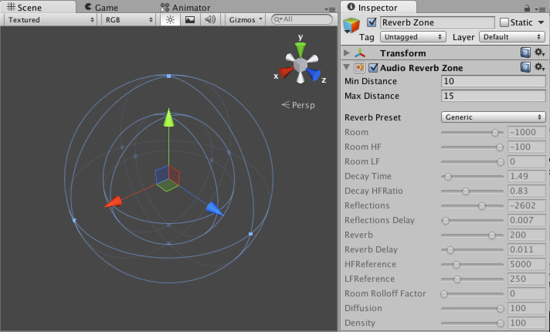

Reverb Zones.
Reverb Zones take an Audio Clip and distort it depending where the audio listener is located inside the reverb zone. They are used when you want to gradually change from a point where there is no ambient effect to a place where there is one, for example when you are entering a cavern.

The Audio Reverb Zone gizmo seen in the inspector.
The Audio Reverb Zone gizmo seen in the inspector.
Properties
| Min Distance | Represents the radius of the inner circle in the gizmo, this determines the zone where there is a gradually reverb effect and a full reverb zone. |
| Max Distance | Represents the radius of the outer circle in the gizmo, this determines the zone where there is no effect and where the reverb starts to get applied gradually. |
| Reverb Preset | Determines the reverb effect that will be used by the reverb zone. |
This diagram illustrates the properties of the reverb zone.

How the sound works in a reverb zone
Adding a Reverb Zone
To add a Reverb Zone to a given audio source just select the object in the inspector and then select Component->Audio->Audio Reverb Zone.
Hints.
- You can mix reverb zones to create combined effects
Page last updated: 2012-08-08